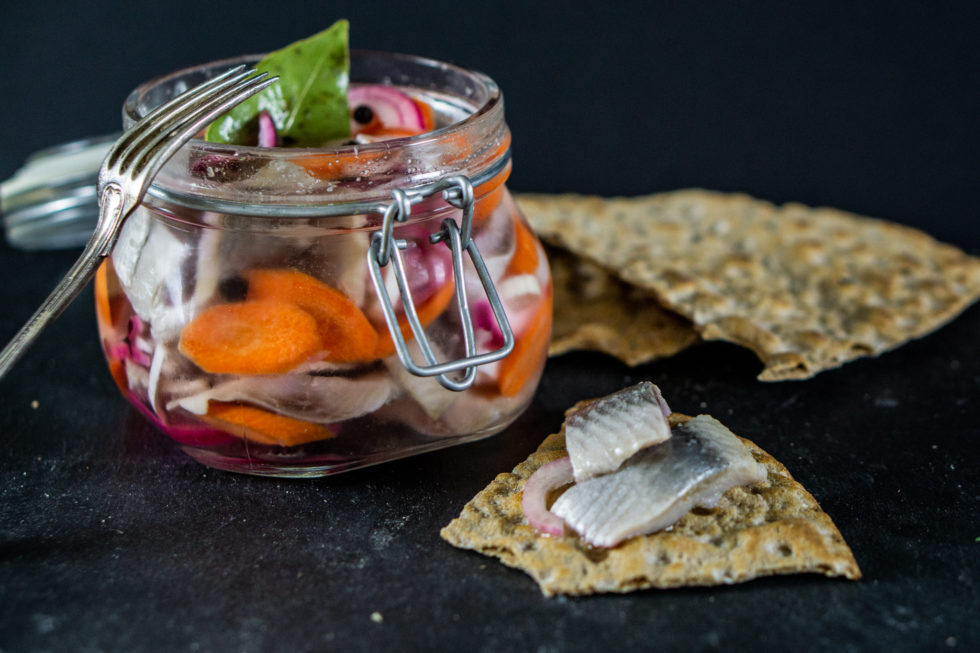

The chances of you winning was 67% since you switched,yet you still lost
Play again to redefine your luck
“Inlagd Sill”

Ingredients:
400 grams (about 5/6 pound) of pre-washed salted herring for pickling,
1 Carrot
1/2 Red Onion
10 cm (4 in) leek
12 Whole Allspice
1 Bay leaf (optional)
Brine:
1 dl (1/2 cup) spirit vinegar 12% — or 1/2 dl (1/4 cup) of spirit vinegar 24% and 1/2 dl (1/4 cup) water
2 dl (1 cup) sugar
3 dl (1 1/2 cups) water
Instructions:
Start by distilling a large glass jar by washing it well with dishwashing liquid and water, and either boiling it or putting it in the oven for 10 minutes (don’t place any rubber or plastic details in the oven)
If you have whole herrings, trim off the tail and fat part along the stomach edge. Then, cut the herrings into smaller pieces
Peel the carrot and cut it into coins. Cut the onion and leek into thin slices
Make the brine by putting the spirit vinegar, sugar, and water in a saucepan and bringing it to a boil. Then simmer it until the sugar has dissolved. Let the brine cool.
Layer the herring fillets, carrot, onion, and leek in the jar. Add the whole allspice and bay leaf.
our over the brine. You don’t have to use all the brine, but make sure that you use enough to cover the herring completely. If the herring isn’t covered, see if you can push it down in the jar or make more brine
Garnish each burger with a piece of bacon and a couple of mushroom slices
Seal the jar and place it in the fridge and wait for two days. Now it’s time to enjoy your herring